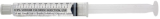
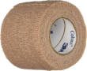

| Consent form |
 |
For explaining the procedure, risks, and benefits to the patient and getting their permission to proceed. |
| Timeout Sheet |
|
A checklist for doing timout. |
| Chucks pad |
 |
Put this under the patient's foot in case of bleeding. |
| Alcohol Prep Pads x 4 |
 |
For cleaning off any blood after the procedure. |
| Chloraprep |
 |
For cleaning the skin prior to cutting. |
| Rubber Tourniquet |
|
To decrease bleeding during the procedure. |
| Lidocaine 1-2% without epinephrine (10 mL) |
 |
For numbing the toe |
| 10 mL Syringe |
 |
For injecting lidocaine. |
| 18 gauge needle |
 |
For drawing up lidocaine into the syringe. Do not let the patient see this needle. |
| 25 to 27.5 gauge needle |
 |
A small and friendly needle for injecting lidocaine. |
| x10 Sterile Gauze, 2" x 2" |
 |
For bandaging the wound, holding pressure, and cleaning the wound. Give extras to patient for use over the next 5-7 days |
| Nail Elevator |
|
A tool for lifting the nail off the nailbed. |
| Nail Splitter |
|
A tool for cutting the nail. |
| Hemostat |
|
For removing the nail after it is cut. |
| Phenol Swab |
|
Only required for patients who want to permanently prevent the nail from coming back. |
| Saline flush x 4 |
 |
After using phenol x 30 sec, it should be flushed out to prevent further chemical burn. |
| Vaseline |
 |
Keeps the wound covered, moist. |
| Coban |
 |
For applying the pressure dressing at the end. |
| Post-op Shoe |
|
For patients who must go back to work in uniform (including boots). |